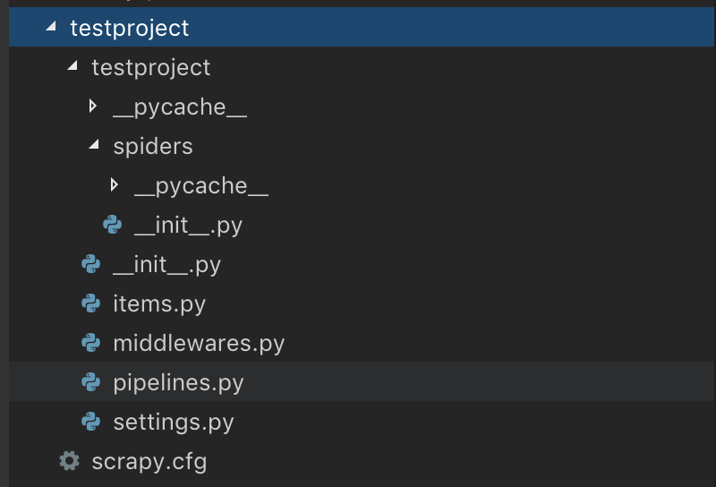

<!DOCTYPE html>
<html>
<head><meta name="generator" content="Hexo 3.8.0">
    <meta charset="utf-8">

    

    
    <title>파이썬으로 웹 크롤링(Web Crawling) 하기(5) Scrapy | DEV Archive | YOONAH</title>
    
    <meta name="viewport" content="width=device-width, initial-scale=1, maximum-scale=1">
    
        <meta name="keywords" content="python,scrapy">
    
    <meta name="description" content="ScrapyPython 기반의 대표적인 웹 크롤링 라이브러리로, 크롤링한 데이터를 원하는 형태로 가공하고 저장하도록 도와준다. 공식 사이트 : https://scrapy.org/ 구조공식 문서 : https://doc.scrapy.org/en/1.5/topics/architecture.html번역본 : http://sooyoung32.github.io/de">
<meta name="keywords" content="python,scrapy">
<meta property="og:type" content="article">
<meta property="og:title" content="파이썬으로 웹 크롤링(Web Crawling) 하기(5) Scrapy">
<meta property="og:url" content="https://yxxnah.github.io/2019/10/08/Web-Crawling-5-Scrapy/index.html">
<meta property="og:site_name" content="DEV Archive | YOONAH">
<meta property="og:description" content="ScrapyPython 기반의 대표적인 웹 크롤링 라이브러리로, 크롤링한 데이터를 원하는 형태로 가공하고 저장하도록 도와준다. 공식 사이트 : https://scrapy.org/ 구조공식 문서 : https://doc.scrapy.org/en/1.5/topics/architecture.html번역본 : http://sooyoung32.github.io/de">
<meta property="og:locale" content="en">
<meta property="og:image" content="https://yxxnah.github.io/2019/10/08/Web-Crawling-5-Scrapy/scrapy.png">
<meta property="og:updated_time" content="2019-10-08T08:08:47.412Z">
<meta name="twitter:card" content="summary">
<meta name="twitter:title" content="파이썬으로 웹 크롤링(Web Crawling) 하기(5) Scrapy">
<meta name="twitter:description" content="ScrapyPython 기반의 대표적인 웹 크롤링 라이브러리로, 크롤링한 데이터를 원하는 형태로 가공하고 저장하도록 도와준다. 공식 사이트 : https://scrapy.org/ 구조공식 문서 : https://doc.scrapy.org/en/1.5/topics/architecture.html번역본 : http://sooyoung32.github.io/de">
<meta name="twitter:image" content="https://yxxnah.github.io/2019/10/08/Web-Crawling-5-Scrapy/scrapy.png">
    

    

    
        <link rel="icon" href="/images/favicons/favicon.ico">
    

    <link rel="stylesheet" href="/libs/font-awesome/css/font-awesome.min.css">
    <link rel="stylesheet" href="/libs/titillium-web/styles.css">
    <link rel="stylesheet" href="/libs/source-code-pro/styles.css">

    <link rel="stylesheet" href="/css/style.css">

    <script src="/libs/jquery/3.3.1/jquery.min.js"></script>
    
    
        <link rel="stylesheet" href="/libs/lightgallery/css/lightgallery.min.css">
    
    
        <link rel="stylesheet" href="/libs/justified-gallery/justifiedGallery.min.css">
    
    
    


    <link rel="stylesheet" type="text/css" href>
    <link rel="stylesheet" href="https://cdn.rawgit.com/innks/NanumSquareRound/master/nanumsquareround.css">
    <link rel="stylesheet" href="https://fonts.googleapis.com/earlyaccess/nanumgothiccoding.css">
    <link rel="stylesheet" href="/css/style.css">
</head>
</html>
<body>
    <div id="wrap">
        <header id="header">
    <div id="header-outer" class="outer">
        <div class="container">
            <div class="container-inner">
                <div id="header-title">
                    <h1 class="logo-wrap">
                        <a href="/" class="logo"></a>
                    </h1>
                    
                        <h2 class="subtitle-wrap">
                            <p class="subtitle">LESS IS MORE</p>
                        </h2>
                    
                </div>
                <div id="header-inner" class="nav-container">
                    <a id="main-nav-toggle" class="nav-icon fa fa-bars"></a>
                    <div class="nav-container-inner">
                        <ul id="main-nav">
                            
                                <li class="main-nav-list-item">
                                    <a class="main-nav-list-link" href="/">Home</a>
                                </li>
                            
                                        <ul class="main-nav-list"><li class="main-nav-list-item"><a class="main-nav-list-link" href="/categories/Programming/">Programming</a><ul class="main-nav-list-child"><li class="main-nav-list-item"><a class="main-nav-list-link" href="/categories/Programming/Git/">Git</a></li><li class="main-nav-list-item"><a class="main-nav-list-link" href="/categories/Programming/GraphQL/">GraphQL</a></li><li class="main-nav-list-item"><a class="main-nav-list-link" href="/categories/Programming/Java/">Java</a></li><li class="main-nav-list-item"><a class="main-nav-list-link" href="/categories/Programming/Tech/">Tech</a></li><li class="main-nav-list-item"><a class="main-nav-list-link" href="/categories/Programming/python/">python</a></li></ul></li></ul>
                                    
                                <li class="main-nav-list-item">
                                    <a class="main-nav-list-link" href="https://www.linkedin.com/in/yoonah-seo-a01040179/">About</a>
                                </li>
                            
                        </ul>
                        <nav id="sub-nav">
                            <div id="search-form-wrap">

    <form class="search-form">
        <input type="text" class="ins-search-input search-form-input" placeholder="Search">
        <button type="submit" class="search-form-submit"></button>
    </form>
    <div class="ins-search">
    <div class="ins-search-mask"></div>
    <div class="ins-search-container">
        <div class="ins-input-wrapper">
            <input type="text" class="ins-search-input" placeholder="Type something...">
            <span class="ins-close ins-selectable"><i class="fa fa-times-circle"></i></span>
        </div>
        <div class="ins-section-wrapper">
            <div class="ins-section-container"></div>
        </div>
    </div>
</div>
<script>
(function (window) {
    var INSIGHT_CONFIG = {
        TRANSLATION: {
            POSTS: 'Posts',
            PAGES: 'Pages',
            CATEGORIES: 'Categories',
            TAGS: 'Tags',
            UNTITLED: '(Untitled)',
        },
        ROOT_URL: '/',
        CONTENT_URL: '/content.json',
    };
    window.INSIGHT_CONFIG = INSIGHT_CONFIG;
})(window);
</script>
<script src="/js/insight.js"></script>

</div>
                        </nav>
                    </div>
                </div>
            </div>
        </div>
    </div>
</header>
        <div class="container">
            <div class="main-body container-inner">
                <div class="main-body-inner">
                    <section id="main">
                        <div class="main-body-header">
    <h1 class="header">
    
    <a class="page-title-link" href="/categories/Programming/">Programming</a><i class="icon fa fa-angle-right"></i><a class="page-title-link" href="/categories/Programming/python/">python</a>
    </h1>
</div>

                        <div class="main-body-content">
                            <article id="post-Web-Crawling-5-Scrapy" class="article article-single article-type-post" itemscope itemprop="blogPost">
    <div class="article-inner">
        
            <header class="article-header">
                
    
        <h1 class="article-title" itemprop="name">
        파이썬으로 웹 크롤링(Web Crawling) 하기(5) Scrapy
        </h1>
    

            </header>
        
        
            <div class="article-meta">
                
    <div class="article-date">
        <a href="/2019/10/08/Web-Crawling-5-Scrapy/" class="article-date">
            <time datetime="2019-10-08T07:26:29.000Z" itemprop="datePublished">2019-10-08</time>
        </a>
    </div>

		

                
    <div class="article-tag">
        <i class="fa fa-tag"></i>
        <a class="tag-link" href="/tags/python/">python</a>, <a class="tag-link" href="/tags/scrapy/">scrapy</a>
    </div>

            </div>
        
        
        <div class="article-entry" itemprop="articleBody">
            <h2 id="Scrapy"><a href="#Scrapy" class="headerlink" title="Scrapy"></a>Scrapy</h2><p>Python 기반의 대표적인 웹 크롤링 라이브러리로, 크롤링한 데이터를 원하는 형태로 가공하고 저장하도록 도와준다.</p>
<p>공식 사이트 : <a href="https://scrapy.org/" target="_blank" rel="noopener">https://scrapy.org/</a></p>
<h2 id="구조"><a href="#구조" class="headerlink" title="구조"></a>구조</h2><p>공식 문서 : <a href="https://doc.scrapy.org/en/1.5/topics/architecture.html" target="_blank" rel="noopener">https://doc.scrapy.org/en/1.5/topics/architecture.html</a><br>번역본 : <a href="http://sooyoung32.github.io/dev/2016/02/06/scrapy-architecture.html" target="_blank" rel="noopener">http://sooyoung32.github.io/dev/2016/02/06/scrapy-architecture.html</a></p>
<h2 id="설치"><a href="#설치" class="headerlink" title="설치"></a>설치</h2><p>python 버전에 따라 <code>pip</code> 혹은 <code>pip3</code> 으로 라이브러리를 설치한다.<br><figure class="highlight bash"><table><tr><td class="gutter"><pre><span class="line">1</span><br></pre></td><td class="code"><pre><span class="line">$ pip3 install Scrapy</span><br></pre></td></tr></table></figure></p>
<h2 id="프로젝트-생성"><a href="#프로젝트-생성" class="headerlink" title="프로젝트 생성"></a>프로젝트 생성</h2><figure class="highlight bash"><table><tr><td class="gutter"><pre><span class="line">1</span><br></pre></td><td class="code"><pre><span class="line">$ scrapy startproject [프로젝트명]</span><br></pre></td></tr></table></figure>
<p>프로젝트를 생성하면 화면과 같이 파일들이 생성된다.<br></p>
<h2 id="Spider"><a href="#Spider" class="headerlink" title="Spider"></a>Spider</h2><p>프로젝트 생성 후, 실제 구현 코드는 <code>spiders</code> 디렉토리 하위에 작성한다.</p>
<h2 id="구현"><a href="#구현" class="headerlink" title="구현"></a>구현</h2><p><a href="https://www.brainyquote.com/" target="_blank" rel="noopener">https://www.brainyquote.com/</a> 사이트에서 원하는 토픽으로 인용구, 저자, 태그를 크롤링하는 코드이다.</p>
<ol>
<li><p><code>css</code> 접근</p>
<figure class="highlight python"><table><tr><td class="gutter"><pre><span class="line">1</span><br><span class="line">2</span><br><span class="line">3</span><br><span class="line">4</span><br><span class="line">5</span><br><span class="line">6</span><br><span class="line">7</span><br><span class="line">8</span><br><span class="line">9</span><br><span class="line">10</span><br><span class="line">11</span><br><span class="line">12</span><br><span class="line">13</span><br><span class="line">14</span><br><span class="line">15</span><br><span class="line">16</span><br></pre></td><td class="code"><pre><span class="line"><span class="keyword">import</span> scrapy</span><br><span class="line"></span><br><span class="line"></span><br><span class="line"><span class="class"><span class="keyword">class</span> <span class="title">ToScrapeCSSSpider</span><span class="params">(scrapy.Spider)</span>:</span></span><br><span class="line">    name = <span class="string">"toscrape-css"</span></span><br><span class="line">    start_urls = [</span><br><span class="line">        <span class="string">'https://www.brainyquote.com/topics/life-quotes'</span>,</span><br><span class="line">    ]</span><br><span class="line"></span><br><span class="line">    <span class="function"><span class="keyword">def</span> <span class="title">parse</span><span class="params">(self, response)</span>:</span></span><br><span class="line">        <span class="keyword">for</span> quote <span class="keyword">in</span> response.css(<span class="string">"div[id^='qpos']"</span>):</span><br><span class="line">            <span class="keyword">yield</span> &#123;</span><br><span class="line">                <span class="string">'text'</span>: quote.css(<span class="string">"a[title='view quote']::text"</span>).extract_first(),</span><br><span class="line">                <span class="string">'author'</span>: quote.css(<span class="string">"a[title='view author']::text"</span>).extract_first(),</span><br><span class="line">                <span class="string">'tags'</span>: quote.css(<span class="string">"div.kw-box &gt; a::text"</span>).extract()</span><br><span class="line">            &#125;</span><br></pre></td></tr></table></figure>
</li>
<li><p><code>xpath</code> 접근</p>
<figure class="highlight python"><table><tr><td class="gutter"><pre><span class="line">1</span><br><span class="line">2</span><br><span class="line">3</span><br><span class="line">4</span><br><span class="line">5</span><br><span class="line">6</span><br><span class="line">7</span><br><span class="line">8</span><br><span class="line">9</span><br><span class="line">10</span><br><span class="line">11</span><br><span class="line">12</span><br><span class="line">13</span><br><span class="line">14</span><br><span class="line">15</span><br><span class="line">16</span><br></pre></td><td class="code"><pre><span class="line"><span class="keyword">import</span> scrapy</span><br><span class="line"></span><br><span class="line"></span><br><span class="line"><span class="class"><span class="keyword">class</span> <span class="title">ToScrapeSpiderXPath</span><span class="params">(scrapy.Spider)</span>:</span></span><br><span class="line">    name = <span class="string">'toscrape-xpath'</span></span><br><span class="line">    start_urls = [</span><br><span class="line">        <span class="string">'https://www.brainyquote.com/topics/life-quotes'</span>,</span><br><span class="line">    ]</span><br><span class="line"></span><br><span class="line">    <span class="function"><span class="keyword">def</span> <span class="title">parse</span><span class="params">(self, response)</span>:</span></span><br><span class="line">        <span class="keyword">for</span> quote <span class="keyword">in</span> response.xpath(<span class="string">'//div[starts-with(@id,"qpos")]'</span>):</span><br><span class="line">            <span class="keyword">yield</span> &#123;</span><br><span class="line">                <span class="string">'text'</span>: quote.xpath(<span class="string">'.//a[@title="view quote"]/text()'</span>).extract_first(),</span><br><span class="line">                <span class="string">'author'</span>: quote.xpath(<span class="string">'.//a[@title="view author"]/text()'</span>).extract_first(),</span><br><span class="line">                <span class="string">'tags'</span>: quote.xpath(<span class="string">'.//div[@class="kw-box"]/a/text()'</span>).extract()</span><br><span class="line">            &#125;</span><br></pre></td></tr></table></figure>
</li>
</ol>
<h2 id="실행"><a href="#실행" class="headerlink" title="실행"></a>실행</h2><p>크롤러를 실행시켜 <code>json</code> 파일로 저장한다.</p>
<figure class="highlight bash"><table><tr><td class="gutter"><pre><span class="line">1</span><br></pre></td><td class="code"><pre><span class="line">$ scrapy crawl toscrape-css -o quotes-css.json</span><br></pre></td></tr></table></figure>
<figure class="highlight bash"><table><tr><td class="gutter"><pre><span class="line">1</span><br></pre></td><td class="code"><pre><span class="line">$ scrapy crawl toscrape-xpath -o quotes-xpath.json</span><br></pre></td></tr></table></figure>
<figure class="highlight json"><table><tr><td class="gutter"><pre><span class="line">1</span><br><span class="line">2</span><br><span class="line">3</span><br><span class="line">4</span><br><span class="line">5</span><br><span class="line">6</span><br><span class="line">7</span><br><span class="line">8</span><br><span class="line">9</span><br><span class="line">10</span><br><span class="line">11</span><br><span class="line">12</span><br><span class="line">13</span><br><span class="line">14</span><br><span class="line">15</span><br><span class="line">16</span><br><span class="line">17</span><br><span class="line">18</span><br><span class="line">19</span><br><span class="line">20</span><br><span class="line">21</span><br><span class="line">22</span><br><span class="line">23</span><br><span class="line">24</span><br><span class="line">25</span><br><span class="line">26</span><br><span class="line">27</span><br><span class="line">28</span><br></pre></td><td class="code"><pre><span class="line">[</span><br><span class="line">&#123;<span class="attr">"text"</span>: <span class="string">"Infuse your life with action. Don't wait for it to happen. Make it happen. Make your own future. Make your own hope. Make your own love. And whatever your beliefs, honor your creator, not by passively waiting for grace to come down from upon high, but by doing what you can to make grace happen... yourself, right now, right down here on Earth."</span>, <span class="attr">"author"</span>: <span class="string">"Bradley Whitford"</span>, <span class="attr">"tags"</span>: [<span class="string">"Motivational"</span>, <span class="string">"Love"</span>, <span class="string">"Hope"</span>, <span class="string">"Waiting"</span>]&#125;,</span><br><span class="line">&#123;<span class="attr">"text"</span>: <span class="string">"Your work is going to fill a large part of your life, and the only way to be truly satisfied is to do what you believe is great work. And the only way to do great work is to love what you do. If you haven't found it yet, keep looking. Don't settle. As with all matters of the heart, you'll know when you find it."</span>, <span class="attr">"author"</span>: <span class="string">"Steve Jobs"</span>, <span class="attr">"tags"</span>: [<span class="string">"Inspirational"</span>, <span class="string">"Work"</span>, <span class="string">"Love"</span>, <span class="string">"Heart"</span>]&#125;,</span><br><span class="line">&#123;<span class="attr">"text"</span>: <span class="string">"Life is 10% what happens to you and 90% how you react to it."</span>, <span class="attr">"author"</span>: <span class="string">"Charles R. Swindoll"</span>, <span class="attr">"tags"</span>: [<span class="string">"Motivational"</span>, <span class="string">"You"</span>, <span class="string">"React"</span>, <span class="string">"Happens"</span>, <span class="string">"How"</span>]&#125;,</span><br><span class="line">&#123;<span class="attr">"text"</span>: <span class="string">"Beginning today, treat everyone you meet as if they were going to be dead by midnight. Extend to them all the care, kindness and understanding you can muster, and do it with no thought of any reward. Your life will never be the same again."</span>, <span class="attr">"author"</span>: <span class="string">"Og Mandino"</span>, <span class="attr">"tags"</span>: [<span class="string">"Motivational"</span>, <span class="string">"Kindness"</span>, <span class="string">"You"</span>, <span class="string">"Today"</span>]&#125;,</span><br><span class="line">&#123;<span class="attr">"text"</span>: <span class="string">"Learn to enjoy every minute of your life. Be happy now. Don't wait for something outside of yourself to make you happy in the future. Think how really precious is the time you have to spend, whether it's at work or with your family. Every minute should be enjoyed and savored."</span>, <span class="attr">"author"</span>: <span class="string">"Earl Nightingale"</span>, <span class="attr">"tags"</span>: [<span class="string">"Work"</span>, <span class="string">"Family"</span>, <span class="string">"Learning"</span>, <span class="string">"Future"</span>]&#125;,</span><br><span class="line">&#123;<span class="attr">"text"</span>: <span class="string">"Only I can change my life. No one can do it for me."</span>, <span class="attr">"author"</span>: <span class="string">"Carol Burnett"</span>, <span class="attr">"tags"</span>: [<span class="string">"Motivational"</span>, <span class="string">"Change"</span>, <span class="string">"Me"</span>, <span class="string">"My Life"</span>, <span class="string">"I Can"</span>]&#125;,</span><br><span class="line">&#123;<span class="attr">"text"</span>: <span class="string">"Choosing to be positive and having a grateful attitude is going to determine how you're going to live your life."</span>, <span class="attr">"author"</span>: <span class="string">"Joel Osteen"</span>, <span class="attr">"tags"</span>: [<span class="string">"Positive"</span>, <span class="string">"Attitude"</span>, <span class="string">"You"</span>, <span class="string">"Grateful"</span>]&#125;,</span><br><span class="line">&#123;<span class="attr">"text"</span>: <span class="string">"No matter what has happened to you in the past or what is going on in your life right now, it has no power to keep you from having an amazingly good future if you will walk by faith in God. God loves you! He wants you to live with victory over sin so you can possess His promises for your life today!"</span>, <span class="attr">"author"</span>: <span class="string">"Joyce Meyer"</span>, <span class="attr">"tags"</span>: [<span class="string">"Good"</span>, <span class="string">"God"</span>, <span class="string">"Faith"</span>, <span class="string">"Future"</span>]&#125;,</span><br><span class="line">&#123;<span class="attr">"text"</span>: <span class="string">"Security is mostly a superstition. It does not exist in nature, nor do the children of men as a whole experience it. Avoiding danger is no safer in the long run than outright exposure. Life is either a daring adventure, or nothing."</span>, <span class="attr">"author"</span>: <span class="string">"Helen Keller"</span>, <span class="attr">"tags"</span>: [<span class="string">"Nature"</span>, <span class="string">"Children"</span>, <span class="string">"Experience"</span>, <span class="string">"Men"</span>]&#125;,</span><br><span class="line">&#123;<span class="attr">"text"</span>: <span class="string">"Today I choose life. Every morning when I wake up I can choose joy, happiness, negativity, pain... To feel the freedom that comes from being able to continue to make mistakes and choices - today I choose to feel life, not to deny my humanity but embrace it."</span>, <span class="attr">"author"</span>: <span class="string">"Kevyn Aucoin"</span>, <span class="attr">"tags"</span>: [<span class="string">"Inspirational"</span>, <span class="string">"Happiness"</span>, <span class="string">"Freedom"</span>, <span class="string">"Today"</span>]&#125;,</span><br><span class="line">&#123;<span class="attr">"text"</span>: <span class="string">"My mission in life is not merely to survive, but to thrive; and to do so with some passion, some compassion, some humor, and some style."</span>, <span class="attr">"author"</span>: <span class="string">"Maya Angelou"</span>, <span class="attr">"tags"</span>: [<span class="string">"Inspirational"</span>, <span class="string">"Passion"</span>, <span class="string">"Style"</span>, <span class="string">"Humor"</span>]&#125;,</span><br><span class="line">&#123;<span class="attr">"text"</span>: <span class="string">"If you always put limit on everything you do, physical or anything else. It will spread into your work and into your life. There are no limits. There are only plateaus, and you must not stay there, you must go beyond them."</span>, <span class="attr">"author"</span>: <span class="string">"Bruce Lee"</span>, <span class="attr">"tags"</span>: [<span class="string">"Inspirational"</span>, <span class="string">"Work"</span>, <span class="string">"You"</span>, <span class="string">"Limits"</span>]&#125;,</span><br><span class="line">&#123;<span class="attr">"text"</span>: <span class="string">"Peace is the beauty of life. It is sunshine. It is the smile of a child, the love of a mother, the joy of a father, the togetherness of a family. It is the advancement of man, the victory of a just cause, the triumph of truth."</span>, <span class="attr">"author"</span>: <span class="string">"Menachem Begin"</span>, <span class="attr">"tags"</span>: [<span class="string">"Smile"</span>, <span class="string">"Love"</span>, <span class="string">"Family"</span>, <span class="string">"Beauty"</span>]&#125;,</span><br><span class="line">&#123;<span class="attr">"text"</span>: <span class="string">"Stay true to yourself, yet always be open to learn. Work hard, and never give up on your dreams, even when nobody else believes they can come true but you. These are not cliches but real tools you need no matter what you do in life to stay focused on your path."</span>, <span class="attr">"author"</span>: <span class="string">"Phillip Sweet"</span>, <span class="attr">"tags"</span>: [<span class="string">"Work"</span>, <span class="string">"Never Give Up"</span>, <span class="string">"Dreams"</span>, <span class="string">"Yourself"</span>]&#125;,</span><br><span class="line">&#123;<span class="attr">"text"</span>: <span class="string">"I have seen many storms in my life. Most storms have caught me by surprise, so I had to learn very quickly to look further and understand that I am not capable of controlling the weather, to exercise the art of patience and to respect the fury of nature."</span>, <span class="attr">"author"</span>: <span class="string">"Paulo Coelho"</span>, <span class="attr">"tags"</span>: [<span class="string">"Nature"</span>, <span class="string">"Patience"</span>, <span class="string">"Me"</span>, <span class="string">"Art"</span>]&#125;,</span><br><span class="line">&#123;<span class="attr">"text"</span>: <span class="string">"To succeed in life, you need three things: a wishbone, a backbone and a funny bone."</span>, <span class="attr">"author"</span>: <span class="string">"Reba McEntire"</span>, <span class="attr">"tags"</span>: [<span class="string">"Funny"</span>, <span class="string">"You"</span>, <span class="string">"Succeed"</span>, <span class="string">"Need"</span>, <span class="string">"Three"</span>]&#125;,</span><br><span class="line">&#123;<span class="attr">"text"</span>: <span class="string">"I think that life is difficult. People have challenges. Family members get sick, people get older, you don't always get the job or the promotion that you want. You have conflicts in your life. And really, life is about your resilience and your ability to go through your life and all of the ups and downs with a positive attitude."</span>, <span class="attr">"author"</span>: <span class="string">"Jennifer Hyman"</span>, <span class="attr">"tags"</span>: [<span class="string">"Positive"</span>, <span class="string">"Attitude"</span>, <span class="string">"Family"</span>, <span class="string">"You"</span>]&#125;,</span><br><span class="line">&#123;<span class="attr">"text"</span>: <span class="string">"Education is the key to success in life, and teachers make a lasting impact in the lives of their students."</span>, <span class="attr">"author"</span>: <span class="string">"Solomon Ortiz"</span>, <span class="attr">"tags"</span>: [<span class="string">"Teacher"</span>, <span class="string">"Education"</span>, <span class="string">"Success"</span>, <span class="string">"Teachers"</span>]&#125;,</span><br><span class="line">&#123;<span class="attr">"text"</span>: <span class="string">"Your time is limited, so don't waste it living someone else's life. Don't be trapped by dogma - which is living with the results of other people's thinking. Don't let the noise of others' opinions drown out your own inner voice. And most important, have the courage to follow your heart and intuition."</span>, <span class="attr">"author"</span>: <span class="string">"Steve Jobs"</span>, <span class="attr">"tags"</span>: [<span class="string">"Heart"</span>, <span class="string">"Time"</span>, <span class="string">"Courage"</span>, <span class="string">"People"</span>]&#125;,</span><br><span class="line">&#123;<span class="attr">"text"</span>: <span class="string">"Positivity, confidence, and persistence are key in life, so never give up on yourself."</span>, <span class="attr">"author"</span>: <span class="string">"Khalid"</span>, <span class="attr">"tags"</span>: [<span class="string">"Never Give Up"</span>, <span class="string">"Confidence"</span>, <span class="string">"Yourself"</span>, <span class="string">"Key"</span>]&#125;,</span><br><span class="line">&#123;<span class="attr">"text"</span>: <span class="string">"Thousands of candles can be lighted from a single candle, and the life of the candle will not be shortened. Happiness never decreases by being shared."</span>, <span class="attr">"author"</span>: <span class="string">"Buddha"</span>, <span class="attr">"tags"</span>: [<span class="string">"Inspirational"</span>, <span class="string">"Happiness"</span>, <span class="string">"Candle"</span>, <span class="string">"Never"</span>]&#125;,</span><br><span class="line">&#123;<span class="attr">"text"</span>: <span class="string">"I cannot even imagine where I would be today were it not for that handful of friends who have given me a heart full of joy. Let's face it, friends make life a lot more fun."</span>, <span class="attr">"author"</span>: <span class="string">"Charles R. Swindoll"</span>, <span class="attr">"tags"</span>: [<span class="string">"Friendship"</span>, <span class="string">"Heart"</span>, <span class="string">"Me"</span>, <span class="string">"Today"</span>]&#125;,</span><br><span class="line">&#123;<span class="attr">"text"</span>: <span class="string">"I believe that a trusting attitude and a patient attitude go hand in hand. You see, when you let go and learn to trust God, it releases joy in your life. And when you trust God, you're able to be more patient. Patience is not just about waiting for something... it's about how you wait, or your attitude while waiting."</span>, <span class="attr">"author"</span>: <span class="string">"Joyce Meyer"</span>, <span class="attr">"tags"</span>: [<span class="string">"Attitude"</span>, <span class="string">"God"</span>, <span class="string">"Patience"</span>, <span class="string">"Waiting"</span>]&#125;,</span><br><span class="line">&#123;<span class="attr">"text"</span>: <span class="string">"The fear of death follows from the fear of life. A man who lives fully is prepared to die at any time."</span>, <span class="attr">"author"</span>: <span class="string">"Mark Twain"</span>, <span class="attr">"tags"</span>: [<span class="string">"Death"</span>, <span class="string">"Fear"</span>, <span class="string">"Time"</span>, <span class="string">"Man"</span>]&#125;,</span><br><span class="line">&#123;<span class="attr">"text"</span>: <span class="string">"Never stop fighting until you arrive at your destined place - that is, the unique you. Have an aim in life, continuously acquire knowledge, work hard, and have perseverance to realise the great life."</span>, <span class="attr">"author"</span>: <span class="string">"A. P. J. Abdul Kalam"</span>, <span class="attr">"tags"</span>: [<span class="string">"Work"</span>, <span class="string">"Knowledge"</span>, <span class="string">"Perseverance"</span>, <span class="string">"You"</span>]&#125;,</span><br><span class="line">&#123;<span class="attr">"text"</span>: <span class="string">"You can never control who you fall in love with, even when you're in the most sad, confused time of your life. You don't fall in love with people because they're fun. It just happens."</span>, <span class="attr">"author"</span>: <span class="string">"Kirsten Dunst"</span>, <span class="attr">"tags"</span>: [<span class="string">"Sad"</span>, <span class="string">"Love"</span>, <span class="string">"Relationship"</span>, <span class="string">"Time"</span>]&#125;</span><br><span class="line">]</span><br></pre></td></tr></table></figure>

        </div>
        <footer class="article-footer">
            


    <a data-url="https://yxxnah.github.io/2019/10/08/Web-Crawling-5-Scrapy/" data-id="ck4b00wrh000xk43z239221d1" class="article-share-link"><i class="fa fa-share"></i>Share</a>
<script>
    (function ($) {
        $('body').on('click', function() {
            $('.article-share-box.on').removeClass('on');
        }).on('click', '.article-share-link', function(e) {
            e.stopPropagation();

            var $this = $(this),
                url = $this.attr('data-url'),
                encodedUrl = encodeURIComponent(url),
                id = 'article-share-box-' + $this.attr('data-id'),
                offset = $this.offset(),
                box;

            if ($('#' + id).length) {
                box = $('#' + id);

                if (box.hasClass('on')){
                    box.removeClass('on');
                    return;
                }
            } else {
                var html = [
                    '<div id="' + id + '" class="article-share-box">',
                        '<input class="article-share-input" value="' + url + '">',
                        '<div class="article-share-links">',
                            '<a href="https://twitter.com/intent/tweet?url=' + encodedUrl + '" class="article-share-twitter" target="_blank" title="Twitter"></a>',
                            '<a href="https://www.facebook.com/sharer.php?u=' + encodedUrl + '" class="article-share-facebook" target="_blank" title="Facebook"></a>',
                            '<a href="http://pinterest.com/pin/create/button/?url=' + encodedUrl + '" class="article-share-pinterest" target="_blank" title="Pinterest"></a>',
                            '<a href="https://plus.google.com/share?url=' + encodedUrl + '" class="article-share-google" target="_blank" title="Google+"></a>',
                        '</div>',
                    '</div>'
                ].join('');

              box = $(html);

              $('body').append(box);
            }

            $('.article-share-box.on').hide();

            box.css({
                top: offset.top + 25,
                left: offset.left
            }).addClass('on');

        }).on('click', '.article-share-box', function (e) {
            e.stopPropagation();
        }).on('click', '.article-share-box-input', function () {
            $(this).select();
        }).on('click', '.article-share-box-link', function (e) {
            e.preventDefault();
            e.stopPropagation();

            window.open(this.href, 'article-share-box-window-' + Date.now(), 'width=500,height=450');
        });
    })(jQuery);
</script>

        </footer>
    </div>
    <script type="application/ld+json">
    {
        "@context": "https://schema.org",
        "@type": "BlogPosting",
        "author": {
            "@type": "Person",
            "name": "Yoonah Seo"
        },
        "headline": "파이썬으로 웹 크롤링(Web Crawling) 하기(5) Scrapy",
        "image": "https://yxxnah.github.ioscrapy.png",
        "keywords": "python scrapy",
        "genre": "Programming python",
        "datePublished": "2019-10-08",
        "dateCreated": "2019-10-08",
        "dateModified": "2019-10-08",
        "url": "https://yxxnah.github.io/2019/10/08/Web-Crawling-5-Scrapy/",
        "description": "ScrapyPython 기반의 대표적인 웹 크롤링 라이브러리로, 크롤링한 데이터를 원하는 형태로 가공하고 저장하도록 도와준다.
공식 사이트 : https://scrapy.org/
구조공식 문서 : https://doc.scrapy.org/en/1.5/topics/architecture.html번역본 : http://sooyoung32.github.io/de"
        "wordCount": 2033
    }
</script>

</article>

    <section id="comments">
    
        
    <div id="disqus_thread">
        <noscript>Please enable JavaScript to view the <a href="//disqus.com/?ref_noscript">comments powered by Disqus.</a></noscript>
    </div>

    
    </section>


                        </div>
                    </section>
                    <aside id="sidebar">
    <a class="sidebar-toggle" title="Expand Sidebar"><i class="toggle icon"></i></a>
    <div class="github-card" data-github="yxxnah" data-width="340" data-height="150" data-theme="default"></div>
    <script src="//cdn.jsdelivr.net/github-cards/latest/widget.js"></script>
    
        
<nav id="article-nav">
    
        <a href="/2019/10/31/GraphQL/" id="article-nav-newer" class="article-nav-link-wrap">
        <strong class="article-nav-caption">newer</strong>
        <p class="article-nav-title">
        
            GraphQL
        
        </p>
        <i class="icon fa fa-chevron-right" id="icon-chevron-right"></i>
    </a>
    
    
        <a href="/2019/10/02/Web-Crawling-4-Selenium/" id="article-nav-older" class="article-nav-link-wrap">
        <strong class="article-nav-caption">older</strong>
        <p class="article-nav-title">파이썬으로 웹 크롤링(Web Crawling) 하기(4) Selenium 사용하기</p>
        <i class="icon fa fa-chevron-left" id="icon-chevron-left"></i>
        </a>
    
</nav>

    
    <div class="widgets-container">
        
            
                

            
                
    <div class="widget-wrap">
        <h3 class="widget-title">recents</h3>
        <div class="widget">
            <ul id="recent-post" class="no-thumbnail">
                
                    <li>
                        
                        <div class="item-inner">
                            <p class="item-category"><a class="article-category-link" href="/categories/Programming/">Programming</a><i class="icon fa fa-angle-right"></i><a class="article-category-link" href="/categories/Programming/GraphQL/">GraphQL</a></p>
                            <p class="item-title"><a href="/2019/10/31/GraphQL/" class="title">GraphQL</a></p>
                            <p class="item-date"><time datetime="2019-10-31T09:08:07.000Z" itemprop="datePublished">2019-10-31</time></p>
                        </div>
                    </li>
                
                    <li>
                        
                        <div class="item-inner">
                            <p class="item-category"><a class="article-category-link" href="/categories/Programming/">Programming</a><i class="icon fa fa-angle-right"></i><a class="article-category-link" href="/categories/Programming/python/">python</a></p>
                            <p class="item-title"><a href="/2019/10/08/Web-Crawling-5-Scrapy/" class="title">파이썬으로 웹 크롤링(Web Crawling) 하기(5) Scrapy</a></p>
                            <p class="item-date"><time datetime="2019-10-08T07:26:29.000Z" itemprop="datePublished">2019-10-08</time></p>
                        </div>
                    </li>
                
                    <li>
                        
                        <div class="item-inner">
                            <p class="item-category"><a class="article-category-link" href="/categories/Programming/">Programming</a><i class="icon fa fa-angle-right"></i><a class="article-category-link" href="/categories/Programming/python/">python</a></p>
                            <p class="item-title"><a href="/2019/10/02/Web-Crawling-4-Selenium/" class="title">파이썬으로 웹 크롤링(Web Crawling) 하기(4) Selenium 사용하기</a></p>
                            <p class="item-date"><time datetime="2019-10-02T12:20:11.000Z" itemprop="datePublished">2019-10-02</time></p>
                        </div>
                    </li>
                
                    <li>
                        
                        <div class="item-inner">
                            <p class="item-category"><a class="article-category-link" href="/categories/Programming/">Programming</a><i class="icon fa fa-angle-right"></i><a class="article-category-link" href="/categories/Programming/python/">python</a></p>
                            <p class="item-title"><a href="/2019/10/02/Web-Crawling-3-Database/" class="title">파이썬으로 웹 크롤링(Web Crawling) 하기(3) Database</a></p>
                            <p class="item-date"><time datetime="2019-10-02T07:36:46.000Z" itemprop="datePublished">2019-10-02</time></p>
                        </div>
                    </li>
                
                    <li>
                        
                        <div class="item-inner">
                            <p class="item-category"><a class="article-category-link" href="/categories/Programming/">Programming</a><i class="icon fa fa-angle-right"></i><a class="article-category-link" href="/categories/Programming/python/">python</a></p>
                            <p class="item-title"><a href="/2019/09/02/Web-Crawling-2-BeautifulSoup/" class="title">파이썬으로 웹 크롤링(Web Crawling) 하기(2) BeautifulSoup</a></p>
                            <p class="item-date"><time datetime="2019-09-02T09:07:44.000Z" itemprop="datePublished">2019-09-02</time></p>
                        </div>
                    </li>
                
            </ul>
        </div>
    </div>

            
                
    <div class="widget-wrap widget-list">
        <h3 class="widget-title">categories</h3>
        <div class="widget">
            <ul class="category-list"><li class="category-list-item"><a class="category-list-link" href="/categories/Programming/">Programming</a><span class="category-list-count">14</span><ul class="category-list-child"><li class="category-list-item"><a class="category-list-link" href="/categories/Programming/Git/">Git</a><span class="category-list-count">4</span></li><li class="category-list-item"><a class="category-list-link" href="/categories/Programming/GraphQL/">GraphQL</a><span class="category-list-count">1</span><ul class="category-list-child"><li class="category-list-item"><a class="category-list-link" href="/categories/Programming/GraphQL/TECH/">TECH</a><span class="category-list-count">1</span></li></ul></li><li class="category-list-item"><a class="category-list-link" href="/categories/Programming/Java/">Java</a><span class="category-list-count">2</span></li><li class="category-list-item"><a class="category-list-link" href="/categories/Programming/Tech/">Tech</a><span class="category-list-count">2</span></li><li class="category-list-item"><a class="category-list-link" href="/categories/Programming/python/">python</a><span class="category-list-count">5</span></li></ul></li></ul>
        </div>
    </div>


            
                
    <div class="widget-wrap widget-list">
        <h3 class="widget-title">archives</h3>
        <div class="widget">
            <ul class="archive-list"><li class="archive-list-item"><a class="archive-list-link" href="/archives/2019/10/">October 2019</a><span class="archive-list-count">4</span></li><li class="archive-list-item"><a class="archive-list-link" href="/archives/2019/09/">September 2019</a><span class="archive-list-count">2</span></li><li class="archive-list-item"><a class="archive-list-link" href="/archives/2019/05/">May 2019</a><span class="archive-list-count">1</span></li><li class="archive-list-item"><a class="archive-list-link" href="/archives/2019/04/">April 2019</a><span class="archive-list-count">7</span></li></ul>
        </div>
    </div>


            
                
    <div class="widget-wrap widget-list">
        <h3 class="widget-title">tags</h3>
        <div class="widget">
            <ul class="tag-list"><li class="tag-list-item"><a class="tag-list-link" href="/tags/BeautifulSoup/">BeautifulSoup</a><span class="tag-list-count">1</span></li><li class="tag-list-item"><a class="tag-list-link" href="/tags/Git/">Git</a><span class="tag-list-count">4</span></li><li class="tag-list-item"><a class="tag-list-link" href="/tags/GraphQL/">GraphQL</a><span class="tag-list-count">1</span></li><li class="tag-list-item"><a class="tag-list-link" href="/tags/Java/">Java</a><span class="tag-list-count">2</span></li><li class="tag-list-item"><a class="tag-list-link" href="/tags/MSA/">MSA</a><span class="tag-list-count">1</span></li><li class="tag-list-item"><a class="tag-list-link" href="/tags/Tech/">Tech</a><span class="tag-list-count">1</span></li><li class="tag-list-item"><a class="tag-list-link" href="/tags/python/">python</a><span class="tag-list-count">5</span></li><li class="tag-list-item"><a class="tag-list-link" href="/tags/scrapy/">scrapy</a><span class="tag-list-count">1</span></li><li class="tag-list-item"><a class="tag-list-link" href="/tags/selenium/">selenium</a><span class="tag-list-count">1</span></li><li class="tag-list-item"><a class="tag-list-link" href="/tags/정규식/">정규식</a><span class="tag-list-count">1</span></li></ul>
        </div>
    </div>


            
                
    <div class="widget-wrap widget-float">
        <h3 class="widget-title">tag cloud</h3>
        <div class="widget tagcloud">
            <a href="/tags/BeautifulSoup/" style="font-size: 10px;">BeautifulSoup</a> <a href="/tags/Git/" style="font-size: 16.67px;">Git</a> <a href="/tags/GraphQL/" style="font-size: 10px;">GraphQL</a> <a href="/tags/Java/" style="font-size: 13.33px;">Java</a> <a href="/tags/MSA/" style="font-size: 10px;">MSA</a> <a href="/tags/Tech/" style="font-size: 10px;">Tech</a> <a href="/tags/python/" style="font-size: 20px;">python</a> <a href="/tags/scrapy/" style="font-size: 10px;">scrapy</a> <a href="/tags/selenium/" style="font-size: 10px;">selenium</a> <a href="/tags/정규식/" style="font-size: 10px;">정규식</a>
        </div>
    </div>


            
                
    <div class="widget-wrap widget-list">
        <h3 class="widget-title">links</h3>
        <div class="widget">
            <ul>
                
                    <li>
                        <a href="http://hexo.io">Hexo</a>
                    </li>
                
            </ul>
        </div>
    </div>


            
        
    </div>
</aside>

                </div>
            </div>
        </div>
        <footer id="footer">
    <div class="container">
        <div class="container-inner">
            <a id="back-to-top" href="javascript:;"><i class="icon fa fa-angle-up"></i></a>
            <div class="credit">
                <h1 class="logo-wrap">
                    <a href="/" class="logo"></a>
                </h1>
                <p>&copy; 2019 Yoonah Seo</p>
                <p>Powered by <a href="//hexo.io/" target="_blank">Hexo</a>. Theme by <a href="//github.com/ppoffice" target="_blank">PPOffice</a></p>
            </div>
            <div class="footer-plugins">
              
    


            </div>
        </div>
    </div>
</footer>

        
    
    <script>
    var disqus_shortname = 'hexo-theme-hueman';
    
    
    var disqus_url = 'https://yxxnah.github.io/2019/10/08/Web-Crawling-5-Scrapy/';
    
    (function() {
    var dsq = document.createElement('script');
    dsq.type = 'text/javascript';
    dsq.async = true;
    dsq.src = '//' + disqus_shortname + '.disqus.com/embed.js';
    (document.getElementsByTagName('head')[0] || document.getElementsByTagName('body')[0]).appendChild(dsq);
    })();
    </script>


    
        <script src="/libs/lightgallery/js/lightgallery.min.js"></script>
        <script src="/libs/lightgallery/js/lg-thumbnail.min.js"></script>
        <script src="/libs/lightgallery/js/lg-pager.min.js"></script>
        <script src="/libs/lightgallery/js/lg-autoplay.min.js"></script>
        <script src="/libs/lightgallery/js/lg-fullscreen.min.js"></script>
        <script src="/libs/lightgallery/js/lg-zoom.min.js"></script>
        <script src="/libs/lightgallery/js/lg-hash.min.js"></script>
        <script src="/libs/lightgallery/js/lg-share.min.js"></script>
        <script src="/libs/lightgallery/js/lg-video.min.js"></script>
    
    
        <script src="/libs/justified-gallery/jquery.justifiedGallery.min.js"></script>
    
    


<!-- Custom Scripts -->
<script src="/js/main.js"></script>

    </div>
</body>
</html>
